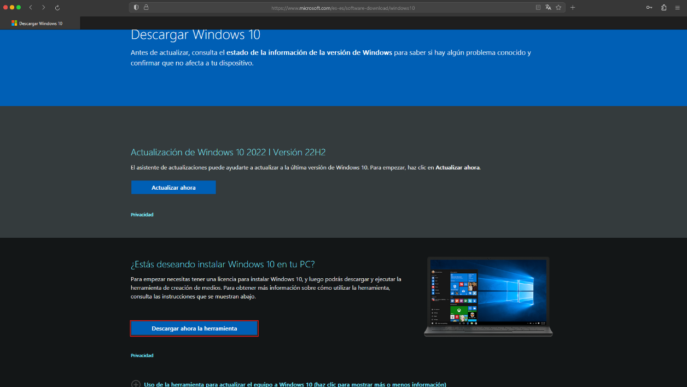
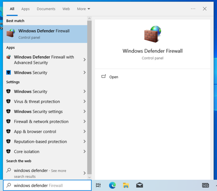

Contenidos
1. Descarga del archivo .iso
Al igual que con Linux, necesitamos un archivo .iso para la instalacion del sistema operativo en la maquina virtual. En el caso de Windows 10, necesitamos descargarnos un instalador en el cual nos dara la opcion a instalarlo en el sistema o descargarlo en un directorio que le indiquemos. Para descargarnos esta herramienta podemos hacerlo desde este enlace.
En esta herramienta que nos proporciona Microsoft, aceptamos las condiciones y seleccionamos la opcion para instalar Windows en un USB. Este nos permitira descargar el archivo .iso en un directorio de nuestra eleccion.

Seguimos con la instalacion y utilizamos los ajustes recomendados hasta llegar a la siguiente seleccion de opciones, en esta elegimos archivo ISO y elegimos donde va a ser descargado el archivo.

2. Creacion y configuracion en VirtualBox
Igual que con Linux, creamos una nueva maquina virtual y realizamos la configuracion de esta, esta vez con el archivo .iso de Windows.

Seleccionamos el archivo .iso de Windows.
Opcionalmente podemos cambiarle el nombre de usuario y la contrasena que vienen por defecto. Tambien podemos asignarle una clave de activacion generica para poder utilizar el sistema sin problemas. En la siguiente pagina podemos encontrar varias de ellas dependiendo de la version de Windows que instalemos. Utilizamos las claves (retail).

Asignamos el hardware a la maquina virtual. El minimo que podemos asignarle de memoria RAM es 2GB, y 2 nucleos pero le asignamos algo mas para que el sistema no vaya lento.

Asignamos el espacio del disco duro virtual. El minimo que se recomienda para Windows es 20GB.

Y por ultimo, asignamos al adaptador de red como red NAT, y seleccionamos el que se creo anteriormente.

3. Windows 10
Una vez creada la maquina virtual, la arrancamos y dejamos que se instale, esto puede tardar varios minutos. Al terminar se reiniciara y una vez entremos en el sistema iremos a Windows Update, donde se descargaran las actualizaciones que haya disponible. Y una vez descargada reiniciaremos la maquina virtual.
4. Configuracion de Windows
El siguiente paso consiste en activar las opciones para compartir archivos a traves de la red en Windows. Para ello vamos buscamos "advanced sharing" o "uso compartido avanzado". Y activamos las dos opciones que aparecen.


Una vez esten estas dos opciones activadas, nos dirigimos al firewall de Windows. Buscamos "windows defender" o "firewall" y hacemos click en este.
Una vez entremos en las opciones avanzadas, nos dirigimos a "reglas de entrada" o "inbound rules" y activamos las opciones indicadas en la siguiente imagen, "Archivos e impresoras compartidos" o "File and Printer Sharing", estas son las reglas que permitiran el acceso a la carpeta compartida. Vamos a activarlas todas aunque solo se va a hacer uso de las reglas (SMB-In).
5. Ping
En este paso tan solo vamos a comprobar, con las dos maquinas virtuales encendidas al mismo tiempo, que estas maquinas se
comunican entre ellas. Si se ha seguido todo paso a paso deberiamos obtener el siguiente resultado.
Buscamos "cmd" en el buscador de Windows.

Una vez entremos en este utilizaremos el siguiente comando con la direccion IP que obtuvimos anteriormente.
ping 10.0.2.4
Como se puede observar las maquinas se comunican entre ellas y con esto pasamos al ultimo paso en el cual vamos a acceder a la carpeta compartida.
6. Carpeta "compartida"
En este ultimo paso nos conectaremos a la direccion IP de nuestra maquina de Linux a traves de Windows. Para ello en el buscador ponemos "run" o "ejecutar" y aqui introducimos la direccion IP de la siguiente manera:
\\10.0.2.4\compartida
Una vez introducimos esto, nos pedira un usuario y contrasena que seran los que creamos previamente en el tutorial de Linux.
Y si todo ha salido correctamente y el usuario y contrasena son correctos, podremos ver nuestro "archivo-linux" desde Windows.